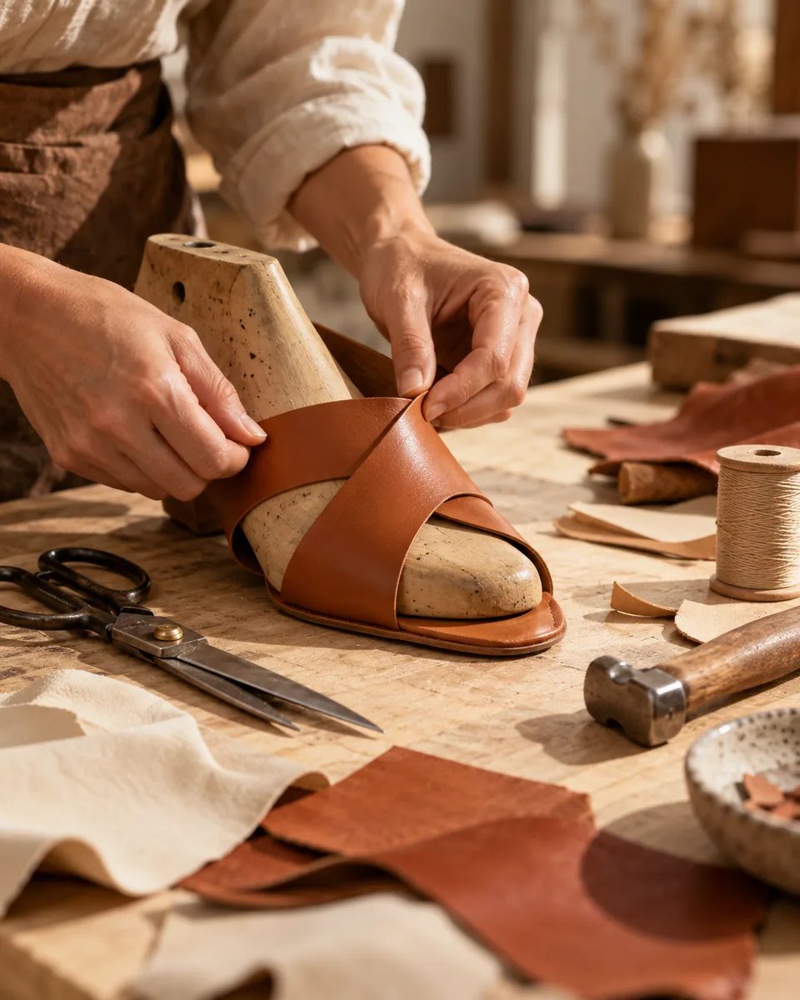
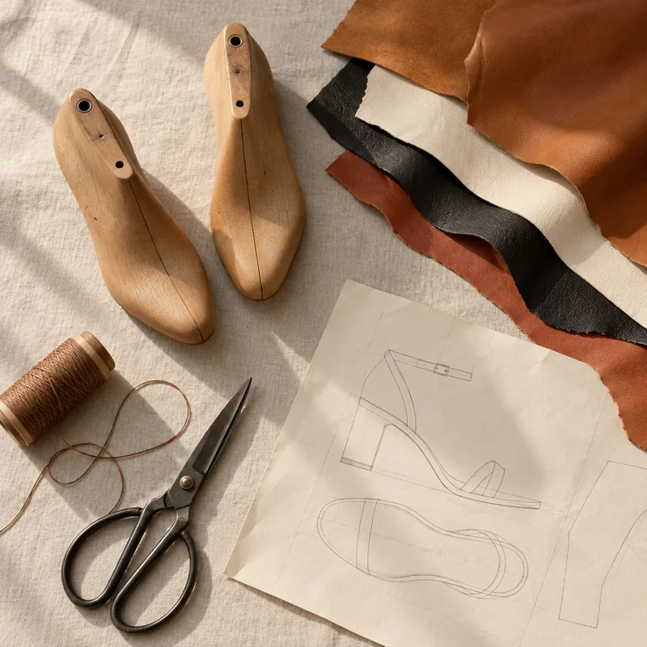

compra verificada
“Usei o Tamanco Marina no trabalho das 8 às 19h. É o primeiro salto que não me fez tirar o sapato debaixo da mesa.”
JM
Juliana M.Goiânia, GO · Tamanco Marina Preto
Do salto para a reunião à rasteira para o fim de semana.
Lançamentos direto do nosso ateliê. Poucas peças por modelo.
Quem compra o Tamanco Marina volta para buscar a segunda cor. Mesma forma, mesma palmilha, mesmo conforto: só muda o look. Leve dois pares e ganhe 15% off com o cupom ALUZZA15.
Os modelos que mais saem da nossa loja, mês após mês.
Vale para toda a loja, inclusive lançamentos. Use o cupom no carrinho e aproveite para completar o par que faltava.



A Aluzza desenha e produz os próprios modelos. Isso significa forma pensada para o pé brasileiro, palmilha macia de verdade e um preço justo, sem intermediário.
Marque @aluzzacalcados e apareça aqui.
“Usei o Tamanco Marina no trabalho das 8 às 19h. É o primeiro salto que não me fez tirar o sapato debaixo da mesa.”
“Comprei a Rasteira Inês dourada, voltei na semana seguinte para a rosê. Chegou em dois dias para o interior de SP.”
“A troca foi sem estresse: pedi o 37 no lugar do 36 pelo WhatsApp e em três dias estava com o par certo.”
“Terceiro par da Aluzza. Qualidade sempre igual, e o atendimento no WhatsApp é ótimo.”
“A sapatilha é macia desde o primeiro dia, sem aquela fase de machucar o calcanhar.”
“Uso no consultório o dia todo. Salto baixo, firme e bonito, exatamente o que eu procurava.”
“A papete caramelo combinou com tudo no verão. Já lavei duas vezes e continua nova.”
“Casamento da minha irmã, dancei a noite inteira. Nenhuma bolha.”
“Tênis confortável e com cara de marca grande. Já veio elogio no primeiro dia.”
“Tiras macias, não aperta o peito do pé. Comprei para mim e para minha mãe.”
“Bico fino sem apertar os dedos. Finalmente um scarpin que dá pra usar em reunião longa.”
“A cor é igualzinha à foto. Palmilha acolchoada de verdade, dá pra sentir.”
“Retirei na loja em duas horas. Atendimento rápido e o sapato lindo ao vivo.”
“Chegou em cinco dias no Nordeste, muito bem embalada. A rasteira é leve e elegante.”
“Salto alto que não balança. Caminhei do estacionamento até o evento sem medo.”
“Dourado discreto, do jeito que eu queria. Usei na formatura e na festa depois.”
“Numeração certinha, peguei meu número de sempre. Forma normal mesmo.”
“Já são quatro pares em dois anos. Compro de olho fechado.”
Lançamentos, reposições do seu número e ofertas antes de todo mundo. Sem spam, prometido.